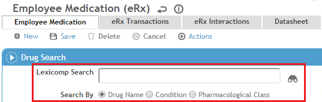

An employee’s medications can be recorded in the Demographics, Body Fluid Exposure, Medical Chart, Clinic Visits, or Immunization modules. The Rx tab in each of these modules displays all of the employee’s medications in date-descending order, regardless of where they were entered.
You must be granted the eRx Prescriber role to access the eRx functions; contact your Cority Administrator. If eRx is used in your office, all users who access employee medication records, even if they will not be prescribing medication electronically, should be granted the eRx Prescriber role and use the FDB database exclusively to look up medications, instead of the older Medication look-up table, to ensure that interactions are not missed, notifications about non-coded medications are reduced, and duplicate records are not created.
In order to use Actions»Print Prescription, you must be assigned the role that is set in the “Print/Email Prescription Authority Role” system setting.
If you are already familiar with the “About eRx” type information, click to jump to:
eRx provides access to the extensive FDB medication database, which includes a complete drug monograph, datasheet, patient information sheet, Rx profile, and accompanying images for most medications. The additional medication reference material can be used to research side effects, blackbox warnings, drug-drug interactions, drug-food interactions, drug-condition interactions, etc. Each patient information sheet can be printed directly from Cority and provided to patients.
FDB Search results identified as indeterminate are non-coded and cannot be prescribed electronically. Medications can be prescribed electronically if the Drug Type is listed as Rx or Rx, OTC (Over-The-Counter).
The FDB database is updated approximately once per month. The Surescripts pharmacy database is updated daily with a full reload once per week. The date of the latest updates are displayed at the top right of the eRx Employee Medication layout.
Cority uses the Surescripts clinical network to connect to pharmacies. The pharmacies connected to Surescripts are listed at http://surescripts.com/network-connections/mns/connected-pharmacies. If you have an NPI, DEA, or SPI number, you can generate an up-to-date report using http://surescripts.com/support/pharmacy-directory.
The pharmacies in the eRx pharmacy list are not the same as those listed in the Cority Pharmacy look-up table. Only eRx Prescribers have access to the eRx pharmacy list.
You cannot prescribe a medication electronically if:
The medication has already been prescribed electronically once.
The Employee Medication record has been printed once.
If you want to copy an existing prescription for an employee to continue the medication when the refills have run out, retrieve the medication record and choose Actions»Copy for New Prescription. If the original medication record is still active, it is ended with today's date, the End Reason is set to 'Prescription Complete' and the relevant details are copied to a new record. Complete the new record as required.
Ensure that your Default Health Center (in My Settings at the top of the screen) matches the health center you are currently prescribing from. This is especially important if you are actively registered for eRx at multiple health centers.
On the Rx tab, in the Employee Medications section, click a link to edit an existing medication, or click New.
On the Employee Medication form, use the FDB Search field to retrieve the desired drug. You can search by drug name, condition, or class.

The Search Matched On column in the FDB Search Results lists every instance of the search text matched in the FDB database. For example, if you search by Drug Name, the column will list every instance of the drug name. This is particularly important to understand if you search by Condition or Pharmacological Class using wildcards, because the search results can be extensive if the search text used is very general. For example, if you search “*abrasion*” by Condition, the Search Matched On column will list many drugs for which the search text matched Corneal Abrasion. If you search “anti*” by Pharmacological Class, the search results will list drugs that are antihistamines as well as drugs that are antibiotics. In such cases, you can use the Search Matched On column to distinguish between the different types of drug.
Based on your selection, the drug name, strength and form fields will be populated automatically.
The selected drug must have a Drug Type of either Rx or Rx, OTC (Over-The-Counter) for it to be prescribable. Drugs that have a Drug Type of Indeterminate do not have a strength or form associated with them; they are effectively drug concepts, and therefore cannot be prescribed. Indeterminate drugs are available for selection primarily for historical purposes. For example, a patient may have taken a particular drug in the past but is not actively taking it at the moment. In that case, the strength and form may not be known or may not be relevant.
eRx prescribers who are not registered with EPCS Gold can submit electronic prescriptions for medications controlled in other jurisdictions, as long as the medications are not controlled in their own jurisdiction or in the jurisdiction of the dispensing pharmacy.
Select the Source of the medication.
The Medication Form is automatically populated by FDB when the drug is selected. The Quantity Unit of Measure field is required by Surescripts and must be populated for an eRx transmission to be completed successfully. You must ensure that the Quantity Unit of Measure you select is appropriate for the medication and Medication Form being prescribed.
Complete the SIG (Instructions), Dispense Quantity, Quantity Unit of Measure (typically the same as the drug form), Refill Quantity, and Pharmacy.
Optionally, complete the Notes To Pharmacy. This is for instructions to the pharmacist or pharmacy and should not contain any instructions for the patient. This is not to be confused with the Notes field, which is used for storing Cority-specific notes about the employee medication.
Click Save.
If a drug-drug, drug-condition or drug-diagnosis interaction exists, a popup is displayed indicating that the interaction must be overridden before the record can be saved. In that event, click the eRx Interactions tab to address the interaction. If there are no interactions, the record is saved.
An interaction override only applies to the immediate prescription—a previous override will not apply to a new prescription.
Choose Actions»Prescribe Electronically.
If any required information is missing, a popup is displayed identifying that information.
If all required fields are complete, a Summary eRx popup is displayed showing all pertinent prescription information.
The popup displays all information that will be sent to the pharmacy; any information on the form that is not shown on the popup will not be sent.
If the eRx Summary information is correct, click Send to transmit the prescription to the pharmacy electronically. If not, click Cancel to return to the Employee Medication layout and make any necessary changes.
A message is displayed indicating the status:
the eRx was successfully sent to the pharmacy (the pharmacy’s system acknowledged receipt) - the record is signed automatically and cannot be edited except to add an End Date and End Medication Reason.
the eRx is pending (the pharmacy’s system has not acknowledged receipt; the status will change when the pharmacy acknowledges receipt) - the record is locked but not signed.
there was an error with the transmission - the record is unlocked to allow for edits or corrections.
If you print a medication record that has already been prescribed electronically, or if the record has previously been printed, the printed record will have a “COPY” watermark.
Several tabs on the eRx Employee Medication form provide additional information from the FDB database:
|
eRx Interactions |
Interactions for the corresponding medication. The tab lists drug-allergy interactions, drug-drug interactions, drug-food interactions, and drug-condition interactions. |
|
eRx Datasheet |
Full reference monograph for the corresponding medication. The information is easily navigable using the headings at the left. The monograph provides information about dental dosing, general dosing, drug-food interactions, lactation, pharmacology, as well as side-effect profiles and general warnings. |
|
eRx Patient Information |
Patient medication information in an easily digestible format. The information can be printed from the tab to be given to patients. |
|
eRx Rx Profile |
Hierarchical tree of information for the corresponding medication that includes blackbox warnings, pharmacological classes, allergy classes, indications, and drug-condition/drug-allergy/drug-drug and drug-food interactions. |
|
eRx Warning Labels/Images |
Warning labels and images (if available) for the corresponding employee medication. |
|
What types of notifications are included with ePrescription? |
eRx Prescribers are notified about prescription transactions and any drug-allergy, drug-drug, drug-food, and drug-condition interactions. In addition, Cority notifies eRx Prescribers about medications that have not been mapped to a FDB drug code. These notifications are displayed as non-coded interactions. |
|
What is a coded vs. non-coded notification? |
Any notifications for active (no End Date or an End Date in the future) employee medications that have not been mapped to a FDB drug code, or for employee diagnoses that do not include an ICD-9 or ICD-10 code, are considered to be non-coded. A non-coded notification advises you that the employee medication or employee diagnosis cannot be included in the interaction detection process because it is not recognized by the FDB database. |
|
What types of notifications are not included with eRx? |
Vaccine-allergy interaction notifications are not included in the current release of eRx, but Cority does provide contraindication notifications of any allergy-vaccine interactions. |
|
How are eRx Prescribers notified about interactions? |
If an employee medication has an interaction, you will see an error popup when you attempt to save the medication record advising that you must override the interaction, using the Interactions tab, prior to saving the record. |
|
If an interaction notification is overridden, is that action recorded or logged somewhere? |
Interaction overrides are recorded on the eRx Interactions tab for the corresponding patient and medication. The notification specifies whether the override was performed by the system or an eRx Prescriber, the name of the eRx Prescriber if applicable, the reason for the override, and the date of the override. |
|
Are blackbox warnings included with eRx? |
Blackbox warnings will appear on the Rx Profile tab only for medications loaded using the FDB Search on the eRx Employee Medication layout. |
All refill requests appear in the eRx Prescriber’s Inbox > eRx Transactions tab, as well as on the eRx Transactions tab of the Employee Medication record. From this tab you can approve or deny a refill request, or deny and approve a different medication.
It is possible for a pharmacy to generate a refill request for a prescription that was printed and sent from Cority manually (as opposed to being sent electronically).
There is no guarantee that a pharmacy will enter all of the necessary information correctly when creating a refill request. You should review each refill request, including comparing it to the Employee Medication to which it is mapped, to ensure that all of the necessary information is correct.
To approve a refill request:
Select the Refill Request, then choose Actions»Approve refill request.
You will be prompted to select the total number of dispensings to approve (between 1-99). If the pharmacy requested a specific number of refills, that number will be auto-populated.
Click Send.
A new medication record is created containing the appropriate details from the previous record. The previous medication record is ended with “Prescription Renewed” as the End Medication Reason and the present date as the End Date.
To deny a refill request:
Select the Refill Request, then choose Actions»Deny refill request.
You will be prompted to select a reason for denying the refill request. At present, the denial reasons provided are the only ones available.
Click Send.
To deny a refill request and approve a different medication for the patient instead:
Select the Refill Request, then choose Actions»Deny with new prescription to follow.
You will be prompted to select a reason for denying the refill request.
Click Send.
A new eRx Employee Medication form is displayed.
The new prescription must be sent to the same pharmacy that made the refill request, so the Pharmacy field is disabled. If you or the patient want to send the new prescription to a different pharmacy, you should deny the refill request and manually create a new Employee Medication record with the new pharmacy selected.
Complete the new eRx Employee Medication form.
Click Save.
On the eRx Summary popup, click Send.
If printing new prescriptions in response to refill requests, ensure that the Prescription Form Configuration (part of the HealthCenter look-up table) for the health center you are registered with contains the Rx Reference # field. This field is required by the pharmacy to link the approval and new prescription to the original refill request.
You can cancel any pending new eRx or refill request provided the pharmacy supports electronic cancellation: open the medication record and choose Actions»Cancel electronic prescription. The cancel request appears in the eRx Transactions tab of the record and also the provider’s Inbox.
If the pharmacy does not support electronic cancellation, you must call the pharmacy to cancel the prescription.
You can view all eRx transactions for a particular eRx Prescriber (eRx Transactions tab on the provider’s Inbox), or all transactions for a particular medication (eRx Transactions tab on the Employee Medication form). The tab provides several views that allow you to filter transactions that are pending action by the prescriber or pharmacy, have errors, are completed, or view all. The Inbox tab also provides a view of administrative transactions relating to the provider’s eRx privileges.
The Inbox>eRx Transactions tab displays all eRx transactions that were initiated by or involve the eRx Prescriber (for example, a transaction would appear in the list if the prescriber got married and either the prescriber or the eRx Admin changed the prescriber's name in the system).
From this tab you can check on the status of eRx transactions, manage refill requests, and view pending eRx messages.
The eRx Admin can view all Admin Surescripts Directory Service transactions in the eRx Admin Log; see Viewing the Surescripts Admin Log.
Surescripts requires the National Drug Code (NDC) for each prescribed medication. This is not included in non-eRx medication records. If an existing medication record is active and not signed, you can update the record to send an eRx. If the medication record has been signed, you must create a new eRx medication record.
Not all historical medication records need to be updated to eRx Employee Medication records. If the medication record is not going to be ePrescribed, then it does not need to be updated to contain an NDC.
Open the corresponding Employee Medication layout.
Use the FDB Search feature to retrieve the medication from the FDB database. This automatically populates the drug name, strength and form on the Employee Medication layout, and attaches the NDC to the record.
Complete the other required fields (if they are not already completed) and save the record.
The medication can now be prescribed electronically.